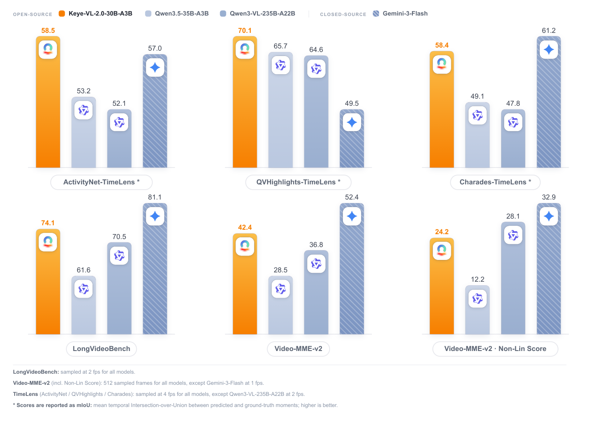
Keye-VL 2.0
Temporal grounding and long-video reasoning with a sparse mixture of experts.
Read reportLatest open model
Keye-VL-2.0-30B-A3B
A multimodal model that follows events through hour-long videos, pinpoints moments in time, and reasons with search, tools, and code.
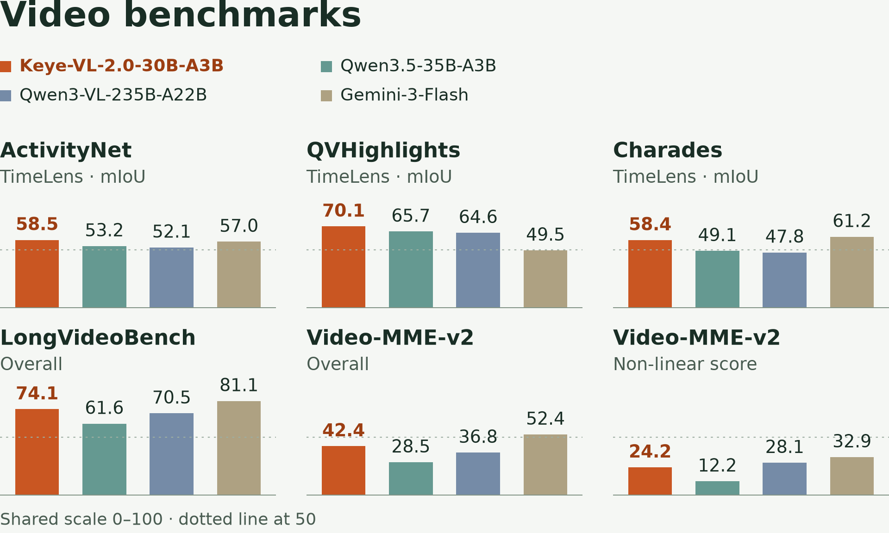

Temporal grounding and long-video reasoning with a sparse mixture of experts.
Read report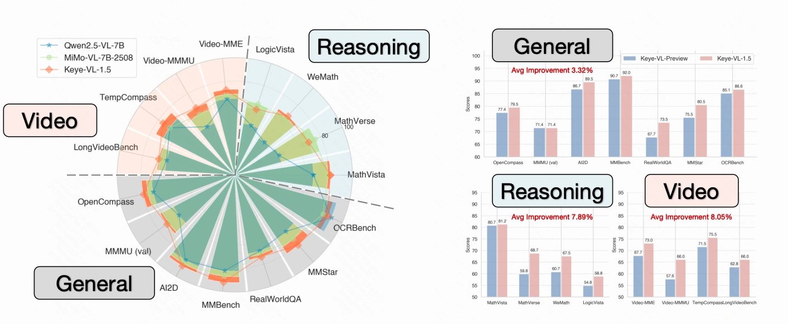
Slow–fast video encoding and reinforcement learning for longer visual contexts.
Read report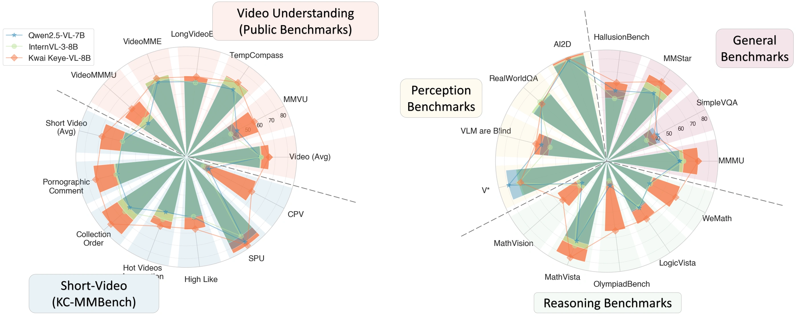
An 8B foundation model and a benchmark for understanding real-world short videos.
Read reportLocate events and follow how they unfold over time.
Connect images, video, and language to reason from visual evidence.
Train models to search, write code, and use tools through reinforcement learning.
By first public release, newest first.
VideoACE asks whether agents can use another look to resolve fast actions. Its 1,000 multiple-choice questions pair high-frame-rate footage with time-stamped evidence. Evaluations of five models compare a single viewing with targeted inspection and with inspection guided by user feedback.
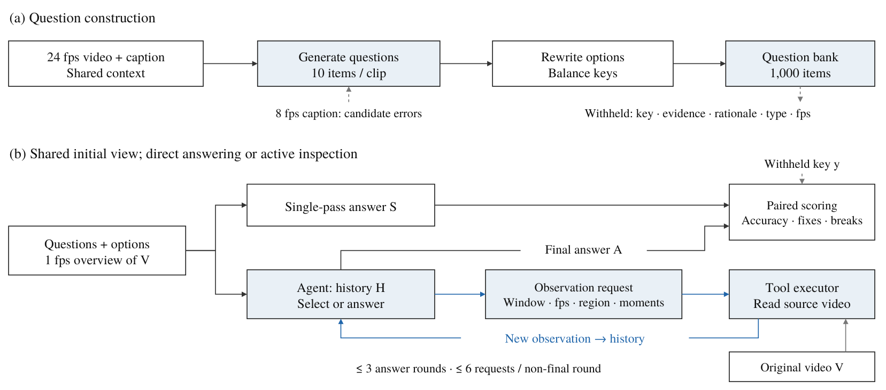
A planner sends targeted questions to perception agents that inspect native audio and video. The agents return short, time-stamped observations, keeping long video sequences out of the planner’s context. On LVBench, the framework reaches 88.6% accuracy using Gemini 3.8 Flash.
Can a coding agent turn a production brief into a scene a director could use? Across 242 tasks, VibePrevisBench checks both the Blender scene and its rendered video. Tests of 11 agents reveal recurring errors in spatial layout and camera motion that survive self-review.
VibeVideoBench gives agents an hour to turn a brief into a finished video with sound using code. Its 239 tasks cover 12 categories, including data stories and lessons. The evaluation checks whether each file plays, whether the video meets its brief, and how well the visuals and audio work together.
Sprout grows a shared timeline as it answers successive questions about a video. It inspects selected intervals in greater detail and saves what it learns in a tree, so later questions can reuse earlier observations.
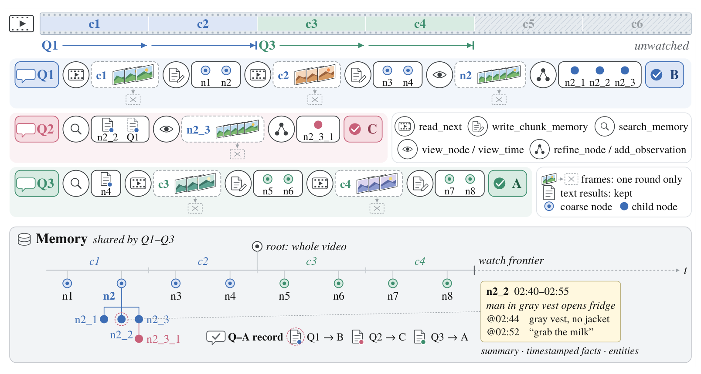
The Global State Model reads earlier tokens through a sparse encoder and stores their information in a fixed-size state shared by the decoder layers. Reusing that state reduces repeated retrieval, so decoder attention and cache costs stay independent of history length. Tests compare throughput and long-context retrieval against matched baselines.
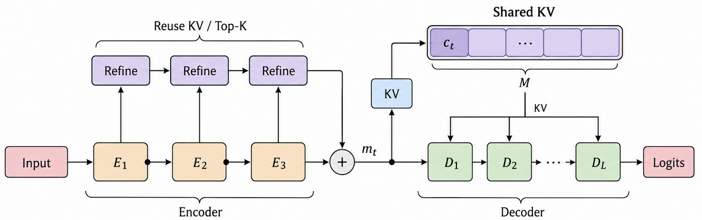
Lngram v2 gives a language model a lookup memory for recurring patterns in its hidden states. Separating memory capacity from model width lets the authors scale the mechanism to a 30B model. They also find that discrete addresses retain recognizable meanings across datasets.
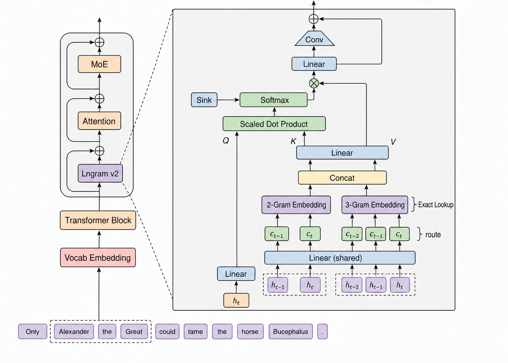
VideoRover follows visual clues beyond the video. It can crop a time interval, search for outside information, browse a source, and return to the footage to verify what it found. The authors train an 8B model on these research trajectories and evaluate it on questions that require both visual evidence and external knowledge.
DELTAVID trains video models to spot a small change between two otherwise similar clips and identify where and when it happened. Controlled edits supply verifiable evidence for training and evaluation. The resulting gains transfer from difference detection to general video-understanding benchmarks.
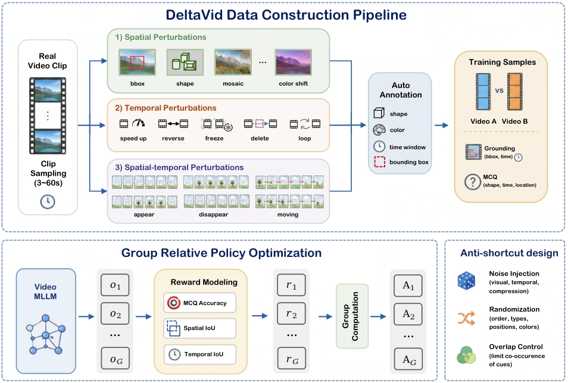
SpatialFlow-GRPO scores the regions affected by an image edit separately. A reward model identifies those regions and assigns feedback to the corresponding latent positions during training. On two image editors, this improves multi-region edits over training with a single score for the whole image.
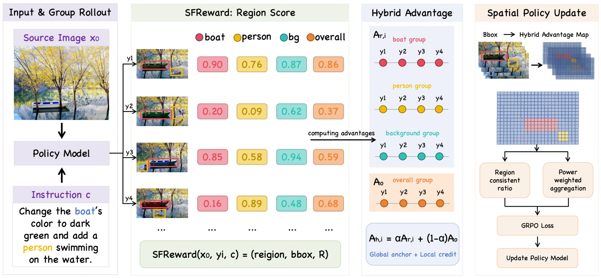
VCap checks caption claims against both a reference caption and the image or video itself. This lets an imperfect reference guide training while visual evidence resolves omissions and unsupported details. An 8B model trained with this reward improves factual accuracy across image and video captioning evaluations.
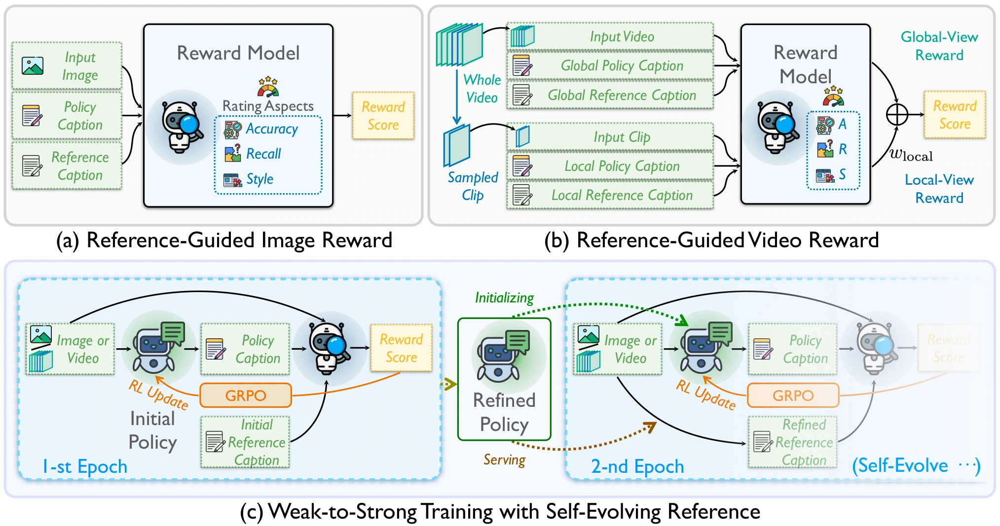
ContextRL gives a reward model the reference solution so it can detect flawed reasoning even when the final answer is correct. When every attempt fails, a mistake report guides another round of sampling. Across 11 perception and reasoning benchmarks, this helps an 8B policy discover solutions missed by standard training.
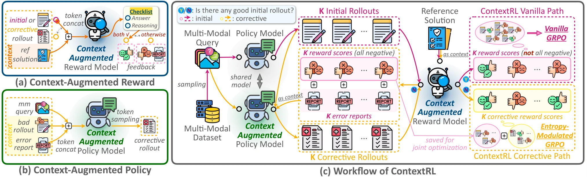
UniRef-Image-Edit handles edits to one image and compositions from several reference images in the same model. It packs the references into a shared sequence under a pixel budget, then expands that budget during training. A multi-source reward helps the editor reconcile visual constraints from different references.
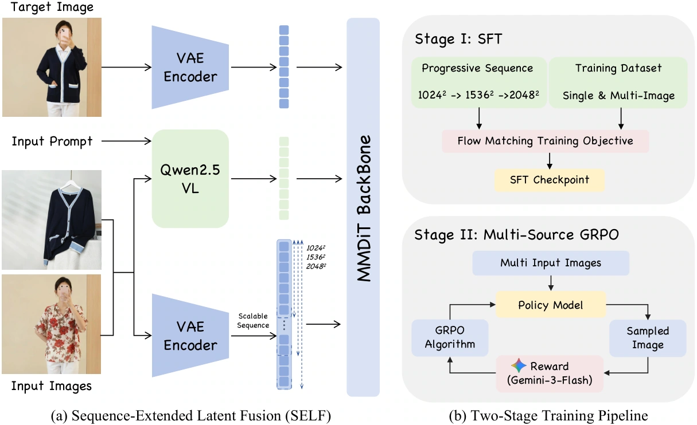
A multimodal planner translates a spatial request into an explicit layout of objects and coordinates. A diffusion model trained on interleaved text and coordinates then renders the plan. The paper tests whether this interface helps image generation and editing preserve complex spatial relationships.
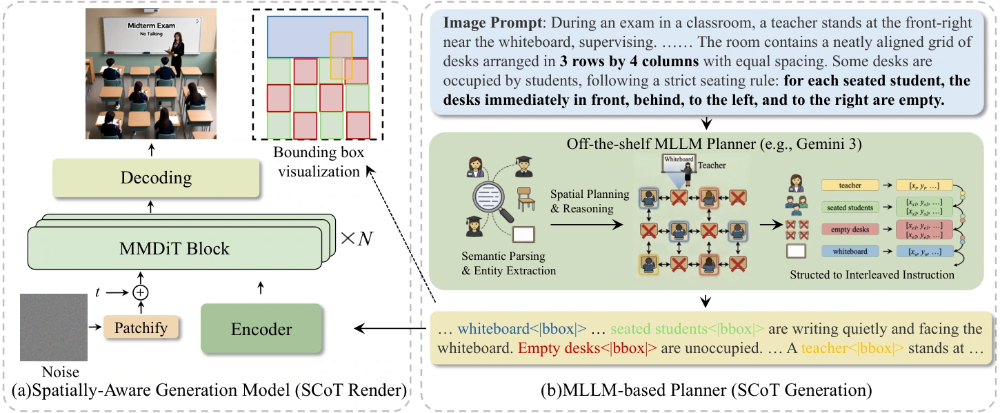
VideoTemp-o3 learns to identify a relevant interval, inspect it, and refine its answer. Reinforcement learning links temporal grounding with question answering, allowing the model to support its responses with specific video evidence.
SpatialReward predicts which regions an edit should affect, then compares those regions in the source and edited images before scoring the result. Trained on 260,000 spatially annotated examples, it detects subtle editing errors and provides a reward signal that improves OmniGen2 on GEdit-Bench.
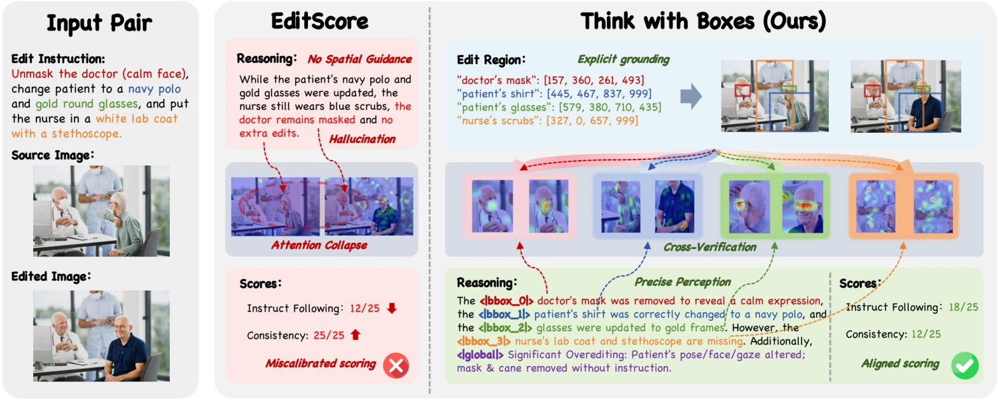
Thyme writes and executes code to inspect images and solve reasoning problems. Supervised training followed by reinforcement learning teaches the model when an image operation or calculation will help answer a question.
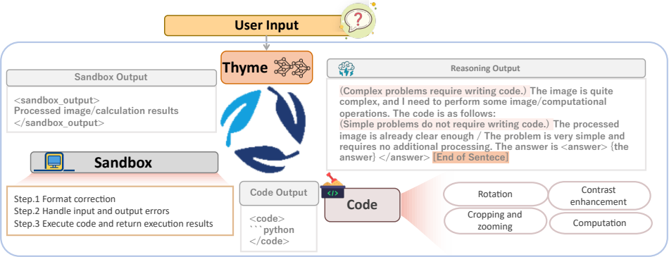
Libra-Merging reduces the number of visual tokens a model processes. It selects important tokens across different image regions, merges similar ones, and condenses the remaining information into a compensation token.
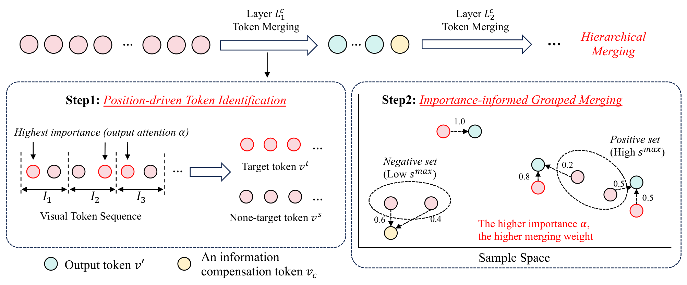
KuaiMod uses reviewer feedback and historical moderation cases to adapt a vision-language model to short-video policies. The authors evaluate it offline and in an online deployment, where user reports fell by 20%.
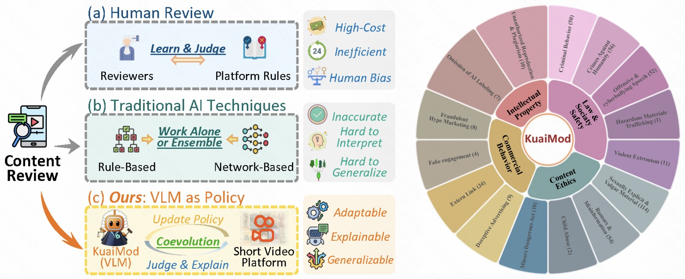
SVBench tests whether a model can follow a conversation while a video is still unfolding. Its 49,979 question–answer pairs span 1,353 videos and link successive questions to earlier events. The paper also introduces StreamingChat as a baseline.
MM-RLHF collects 120,000 human-annotated preference pairs. A reward model explains its judgments, and a training method adjusts the weight of preference examples. The authors evaluate the resulting models across 27 benchmarks.
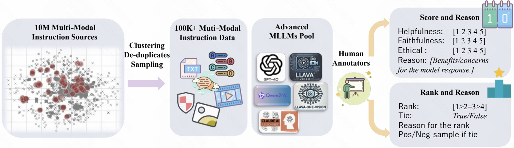
TaskGalaxy expands instruction tuning by generating a wide range of visual tasks and matching them with suitable images. Its construction pipeline filters question–answer pairs to study how broader task coverage affects multimodal generalization.
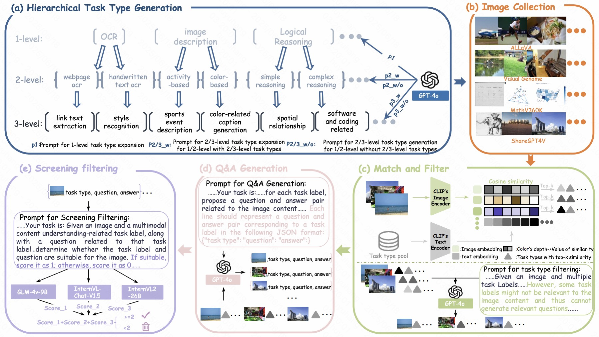
Tokens routed to the same expert can produce conflicting gradients. STGC identifies these conflicts and adds a training loss that encourages the router to send conflicting tokens to different experts.
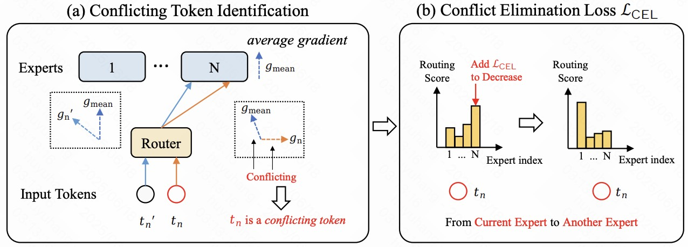
CoMM combines instructional material and visual stories into interleaved image–text sequences. Filters check sentence progression, consistency between images, and image–text alignment. Four evaluation tasks probe whether models can preserve coherence across a sequence.
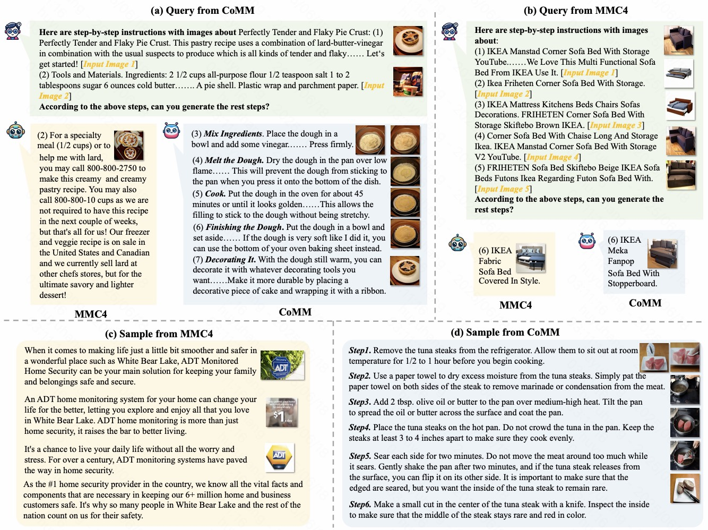